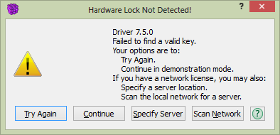

未检测到硬件锁！对话框

PFC使用硬件锁（也称为“安全密钥”或“加密狗”）进行保护。它是一种物理设备（通常是 USB 优盘），连接到本地计算机或网络服务器上。如果程序启动时无法找到本地密钥或网络密钥，就会显示此对话框。
正如对话框中的选项所示，无法找到密钥可能有多种解释。在逐一研究这些选项之前，请注意对话框中的第一行列出了密钥的驱动程序版本。这可能是一条重要信息，因为驱动程序缺失或过时会导致启动错误，而对话框中提供的任何选项都无法解决此类问题。若需请求技术支持，值得记录下此信息。
重试：当硬件锁已连接且没有理由预期它会失效时，此选项值得一试。
继续：此选项绕过以许可模式运行的需要；在这种情况下，程序将以示教模式或无循环模式启动。在示教模式下，程序功能完整，但只能对小模型执行计算循环。在无循环模式下，程序完全不执行计算循环。当从软件安装闪存盘或网络下载进行安装时，PFC的安装（.msi）文件会自动设置在无密钥时以示教模式运行的能力。如果在没有密钥时该模式不可用（即无密钥运行时用户进入无循环模式），这往往表明程序并非正常安装，可能正在以非常规的或用户自建的配置运行。
指定服务器：如果选择此选项，将随后出现一个对话框，允许用户指定用作网络许可服务器的计算机的 IP 地址或机器名（当然，前提是用户的网络上至少有一个可用的网络密钥可访问）。在客户端计算机首次尝试以网络许可启动PFC时，必须执行此步骤（并会显示此对话框）。如果成功，客户端以后的启动将自动搜索上次成功使用的服务器；只有在找不到该服务器的情况下才会显示此对话框。如果指定服务器的尝试失败，程序焦点将返回到未检测到硬件锁！对话框。
扫描网络：此选项将在用户的网络上查找可用的许可。PFC会在找到时报告（如果找到的话），并询问用户是否希望连接到该服务器。如果选择连接，程序将正常启动，并且在后续启动时该客户端将自动尝试从该服务器获取许可。如果失败，将显示未检测到硬件锁！对话框。如果网络扫描未能找到带有可用许可密钥的服务器，控制权将返回到此对话框。
使用右上角的“关闭”按钮关闭对话框，其效果与选择相同。
| 这些内容对您有帮助吗？… 版权与免责声明 | FLAC3D © 2019, Itasca | 原文更新于 2020 年 10 月 8 日 |